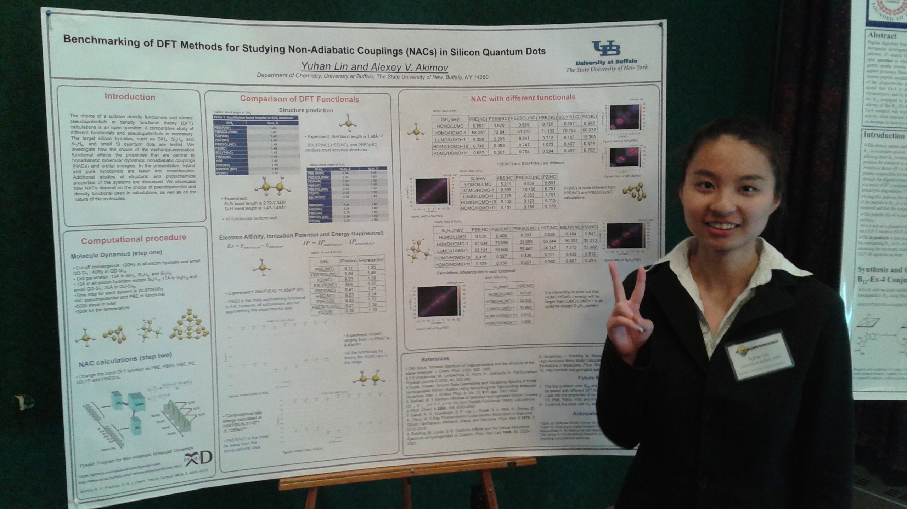

t = March, 2017. Nijam's birthday cake.
From left to right, back row: Niyaz Pordel, Alexey Akimov, Julian Williams, Ekadashi Pradhan, Brendan Smith,
front row: Nijamudheen Abdulrahiman
t = March, 2017. An abstractionist painting of one famous European painter, a chalice, and Theoretical Chemistry.
 t = May, 2016. Alexey gives a talk at Yale University.
t = May, 2016. Alexey gives a talk at Yale University.
Another group photo (2016). From left to right: Nijamudheen Abdulrahiman, Yuhan Lin, Alexey Akimov, Ekadashi Pradhan, Kosuke Sato, Niyaz Pordel
One of the group meetings. (Clockwise: Brendan Smith, Erik Park, Nijamudheen Abdulrahiman, Ekadashi Pradhan)
Yuhan's farewell party in a bowling club. From left to right: Nijamudheen Abdulrahiman, Erik Park (a REU student from CSUSB)

Yuhan Lin presents a poster with her work on Si quantum dots and Nonadiabatic couplings calculations with different desinty functionals.
Kosuke's farewell party (Clockwise: Nijamudheen Abdulrahiman, Yuhan Lin, Niyaz Pordel, Ekadashi Pradhan, Alexey Akimov, Kosuke Sato)
Dr. Ryosuke Jinnouchi, Mr. Kosuke Sato and Alexey in Hard Rock cafe near the Niagara Falls
Niyaz tried SCA activities during the Ice Dragon festival in Buffalo, 2016
.. and also in a Japanese samurai's armor. Kosuke enjoed this a lot.
Kosuke in Alexey's Viking armor kit
Dr. Ryosuke Jinnouchi and Alexey
The first set of seating is assembled by Alexey and Ekadashi.
t = Jan. 2016. Students' offices renovation is completeds and the first equippment is ordered.
Let the dynamics begin: assembling the students' office equipment (recalling M. V. Lomonosov)
Initial conditions (at t = July, 2015). It hasn't changed too much
since then: Alexey is a minimalist.
Science-inspired art
When orbitals of C60 start looking at you...
This is how a photo-isomerization dynamics of C2H4 may look like.
Classical molecular dynamics of a few water molecules, if you don't equilibrate the system first.
When code becomes too extensive... I promise: most of our code is not that scary :)